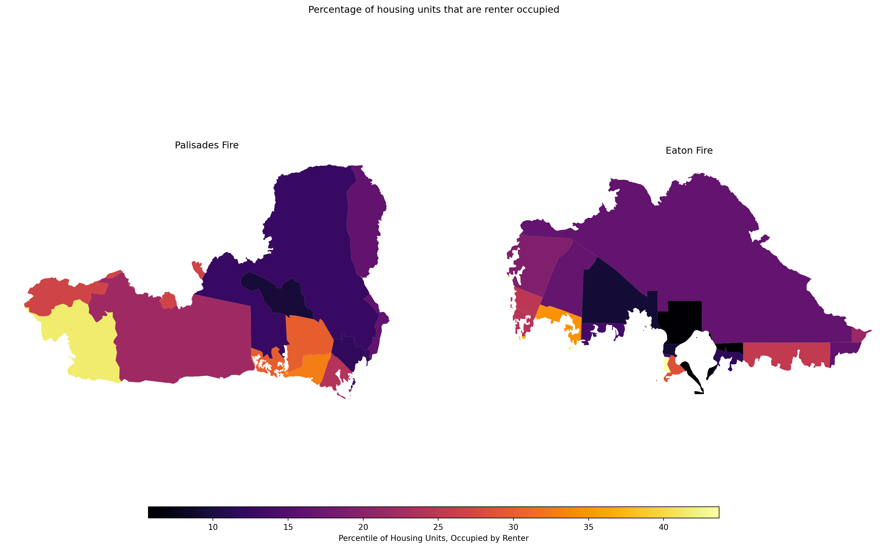

import os
import numpy as np
import matplotlib.pyplot as plt
import geopandas as gpd
import xarray as xr
import rioxarray
import contextily as ctxGithub: https://github.com/marietolteca00/eds220-hwk4.git
Background
The Eaton and Palisades fires were two recent major wildfires that started from strong Santa Ana winds, dry vegetation from previous wet winters, and potential issues with electrical transmission lines. Both wildfires started simultaneously in Los Angeles County on Janurary 07, 2025. These wildfires burned around 60 square miles and destroying thousands of vegetation and structures. As well as a 37,000 acres burned between the Eaton and Palisades wildfires.
Purpose
A nc will be used for the raster (landsat) of Los Angeles County where two wildfires occured during the year 2025. The first is a simplified collection of bands (red, green, blue, near-infrared and shortwave infrared) from the Landsat Collection 2 Level-2 atmosperically adjusted surface reflectance data, obtained by the Landsat 8 satellite. Using the wildfire shapefiles project them onto the Landsat to view where the fires occured.
About Data
Microsoft Planetary Computer, ‘https://planetarycomputer.microsoft.com/dataset/landsat-c2-l2’, is used in this notebook that outlines the fire perimeters for the Palisades and Eaton Fire. This was our data landsat data for the fire perimeters. landsat8-2025-02-23-palisades-eaton.nc
From the County of Los Angeles GIS, ‘https://egis-lacounty.hub.arcgis.com/maps/ad51845ea5fb4eb483bc2a7c38b2370c/about’, was retrieved for both fire perimeters of Palisades and Eaton fire as a shapefile (shp) each were added to a folder.
eaton_boundary:` Layer contains a dissolved fire perimeter for the eaton fire. (01/21/2025)palisades_boundary: Layer contains a dissolved fire perimeter for the palisades fire. (01/21/2025)landsat: Thisncfile contains a collection of bands (red, blue, green, near-infrared, and shortwave infrared) from the Landsat Collection 2 Level-2 atmosperically adjusted surface reflectance data, obtained by the Landsat 8 satellite. This data has been clipped to an area of Los Angeles County to include both fire perimeters.
This repository contains code and materials for analyzing Landsat imagery and mapping wildfire perimeters in Los Angeles County. It demonstrates how to: - Work with NetCDF (.nc) Landsat data - Read and reproject shapefiles - Create true-color (RGB) and false-color composites - Overlay geospatial data to visualize fire boundaries - Generate publication-quality figures - Develop clear and reproducible geospatial workflows
The focus is on the Eaton and Palisades Fires, combining satellite imagery with official fire perimeter shapefiles to explore fire-affected areas.
Highlights:
- Data Exploration
- Restoring geospatial information
- True Color Image
- False color image
Data
- The Landsat .nc file can be downloaded from a shared Google Drive folder provided by the instructor for the course EDS 220 – Working with Environmental Datasets: Google Drive Link
- Fire perimeter shapefiles for the Palisades and Eaton fires were obtained from the County of Los Angeles GIS: County GIS Link
- Each shapefile contains a dissolved fire perimeter for its respective fire and has been added to the data folder in this repository.
Repository Structure:
- When downloading data, add the data folder to
.gitignoreto reduce pushing big files onto github.
├── Chwk4-task2-false-color-TOLTECA.ipynb ├── README.md └── data ├── landsat8-2025-02-23-palisades-eaton.nc ├── Palisades_Perimeter_20250121.shp │ └── palisades_perimeter.md └── Eaton_Perimeter_20250121.shp └── eaton_perimeter.md
Packages Used:
This notebook uses the following Python packages: os, numpy, matplotlib.pyplot, geopandas, xarray, and rioxarray.
- Code Chunk -
CMD+SHIFT+I
Import Libraries
Import data
# Import landsat `nc` file
landsat = xr.open_dataset('data/landsat8-2025-02-23-palisades-eaton.nc')
# Import fire shapefile data
fp = os.path.join('data/eaton_perimeter/Eaton_Perimeter_20250121.shp')
eaton = gpd.read_file(fp)
fp = os.path.join('data/palisades_perimeter/Palisades_Perimeter_20250121.shp')
palisades = gpd.read_file(fp)Data Wrangling
# Lower column titles on dataframes
for df in [palisades, eaton]:
df.columns = df.columns.str.lower()Check Landsat.nc file
# Check CRS of Landsat
print(f"CRS:, {landsat.rio.crs}")
# Extract CRS using spatial_ref variable
wkt = landsat.spatial_ref.crs_wkt
print("\nCRS WKT from spatial_ref:")
print(wkt)
# Write the CRS to the dataset - geospatial information and spatial reference
landsat = landsat.rio.write_crs(wkt, inplace=False)
# Verify CRS is now attached
print("\nCRS after writing:", landsat.rio.crs)CRS:, None
CRS WKT from spatial_ref:
PROJCS["WGS 84 / UTM zone 11N",GEOGCS["WGS 84",DATUM["WGS_1984",SPHEROID["WGS 84",6378137,298.257223563,AUTHORITY["EPSG","7030"]],AUTHORITY["EPSG","6326"]],PRIMEM["Greenwich",0,AUTHORITY["EPSG","8901"]],UNIT["degree",0.0174532925199433,AUTHORITY["EPSG","9122"]],AUTHORITY["EPSG","4326"]],PROJECTION["Transverse_Mercator"],PARAMETER["latitude_of_origin",0],PARAMETER["central_meridian",-117],PARAMETER["scale_factor",0.9996],PARAMETER["false_easting",500000],PARAMETER["false_northing",0],UNIT["metre",1,AUTHORITY["EPSG","9001"]],AXIS["Easting",EAST],AXIS["Northing",NORTH],AUTHORITY["EPSG","32611"]]
CRS after writing: EPSG:32611Fill NA Values into collection of bands Red, green, and blue. This allows for no NaN error message to be removed.
# Substitue any NAN values as 0
landsat_filled = landsat.fillna(0)
# Add fillna() back into rgb
rgb_filled = landsat_filled[["red", "green", "blue"]].to_array()# Assign numpy array to a variable
false_color = landsat[["swir22", "nir08", "red"]].to_array()Transform CRS from Eaton and Palisades fire to match landsat
# Transform Fire Perimeters to match landsat
eaton = eaton.to_crs(landsat.rio.crs)
palisades = palisades.to_crs(landsat.rio.crs)
# Check transformation
print("Eaton CRS:", eaton.crs) # EPSG:32611
print("Palisades CRS:", palisades.crs) # EPSG:32611Eaton CRS: PROJCS["WGS 84 / UTM zone 11N",GEOGCS["WGS 84",DATUM["WGS_1984",SPHEROID["WGS 84",6378137,298.257223563,AUTHORITY["EPSG","7030"]],AUTHORITY["EPSG","6326"]],PRIMEM["Greenwich",0,AUTHORITY["EPSG","8901"]],UNIT["degree",0.0174532925199433,AUTHORITY["EPSG","9122"]],AUTHORITY["EPSG","4326"]],PROJECTION["Transverse_Mercator"],PARAMETER["latitude_of_origin",0],PARAMETER["central_meridian",-117],PARAMETER["scale_factor",0.9996],PARAMETER["false_easting",500000],PARAMETER["false_northing",0],UNIT["metre",1,AUTHORITY["EPSG","9001"]],AXIS["Easting",EAST],AXIS["Northing",NORTH],AUTHORITY["EPSG","32611"]]
Palisades CRS: PROJCS["WGS 84 / UTM zone 11N",GEOGCS["WGS 84",DATUM["WGS_1984",SPHEROID["WGS 84",6378137,298.257223563,AUTHORITY["EPSG","7030"]],AUTHORITY["EPSG","6326"]],PRIMEM["Greenwich",0,AUTHORITY["EPSG","8901"]],UNIT["degree",0.0174532925199433,AUTHORITY["EPSG","9122"]],AUTHORITY["EPSG","4326"]],PROJECTION["Transverse_Mercator"],PARAMETER["latitude_of_origin",0],PARAMETER["central_meridian",-117],PARAMETER["scale_factor",0.9996],PARAMETER["false_easting",500000],PARAMETER["false_northing",0],UNIT["metre",1,AUTHORITY["EPSG","9001"]],AXIS["Easting",EAST],AXIS["Northing",NORTH],AUTHORITY["EPSG","32611"]]Create Map
# Set up fig, ax
fig, ax = plt.subplots(figsize=(10,10))
# Plot false-color background first
false_color.plot.imshow(robust=True)
# Overlay fire perimeters
eaton.boundary.plot(ax=ax, color="hotpink", linewidth=2, label="Eaton Fire", facecolor = "lightpink", alpha = 0.6)
palisades.boundary.plot(ax=ax, color="red", linewidth=2, label="Palisades Fire", facecolor = "indianred", alpha = 0.6)
# Add label for Eaton fire perimeter
ax.text(eaton.geometry.centroid.iloc[0].x,
eaton.geometry.centroid.iloc[0].y,
"Eaton Fire", color="black", fontsize=10, weight="bold", bbox=dict(facecolor='lightgrey', alpha=0.5, pad=5))
# Add labels for Palisades fire perimeter
ax.text(palisades.geometry.centroid.iloc[0].x,
palisades.geometry.centroid.iloc[0].y,
"Palisades Fire", color="black", fontsize=10, weight="bold", bbox=dict(facecolor='lightgrey', alpha=0.5, pad=5))
# Zoom to fire extents - This is for the bound limits
xmin = min(eaton.total_bounds[0], palisades.total_bounds[0]) - 500
xmax = max(eaton.total_bounds[2], palisades.total_bounds[2]) + 500
ymin = min(eaton.total_bounds[1], palisades.total_bounds[1]) - 500
ymax = max(eaton.total_bounds[3], palisades.total_bounds[3]) + 500
# Set limits
ax.set_xlim(xmin, xmax)
ax.set_ylim(ymin, ymax)
# Title
ax.set_title("SWIR-NIR-Red False Color Composite with Fire Perimeters")
# Legend
ax.legend(loc = "upper left")
ax.set_axis_off()
plt.show()
Citation
BibTeX citation:
@online{tolteca2025,
author = {Tolteca, Marie and Tolteca, Marie},
title = {Eaton and {Palisades} {Wildfire} {Perimeter} in {Los}
{Angeles}},
date = {2025-01-01},
url = {https://marietolteca00.github.io/blog_post/ca_wildfire_python},
langid = {en}
}
For attribution, please cite this work as:
Tolteca, Marie, and Marie Tolteca. 2025. “Eaton and Palisades
Wildfire Perimeter in Los Angeles.” January 1, 2025. https://marietolteca00.github.io/blog_post/ca_wildfire_python.